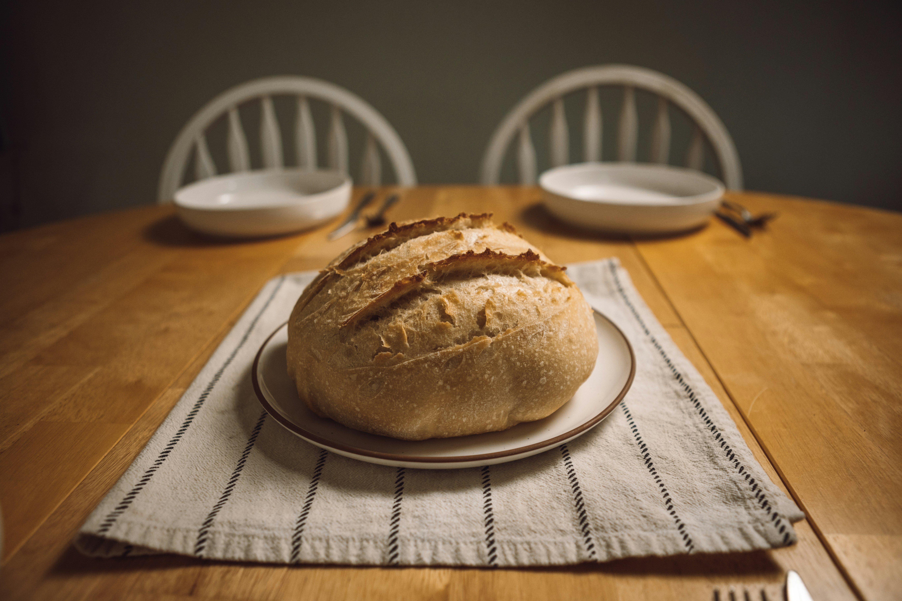

Bread

Description
Bread is a favourite of both young and old. It is a readily availble staple
in many homes. It is often eaten alone, with fruits, jam or mayonnaise.
It almost as though you cannot go wrong with bread.
Interestingly, bread is easy to make. And home-made bread is both a
fun and meal wrapped up in one package.
Ingredients
- Flour
- Sugar
- Milk
- Egg
- Salt
- Margarine
- Raisins
- yeast
Steps
- Mix a cup of flour with egg and margarine in a bowl
- Add sugar, a pinch of salt and Milk to the mix and keep mixing until it forms a dough
- Add a tea spoon of yeast to the dough and kneed thoroughly.
- Put your raisins inside the dough.
- Keep the dough in an air-tight container for 30 minutes.
- Turn on your oven and set temperature to about 150 degrees.
- Put the dough in the oven and let it bake for about 45 minutes.
- Your bread is ready!
Return to Home page.